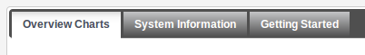

Dashboard is the landing page of the Ultra Console which manages the UltraESB nodes as well as a cluster. This dashboard consist of 3 tabs
Heap Memory Usage (MB) Avg: Max: Min:
Live Threads Avg: Max: Min:
CPU Usage Avg: Max: Min:
File Descriptor Usage Avg: Max: Min:
Work Manager Usage Rate: Count:
File Cache Usage Rate: Count:
Received Messages Rate: Count:
Sent Messages Rate: Count:
| Group | Key | Value |
|---|---|---|